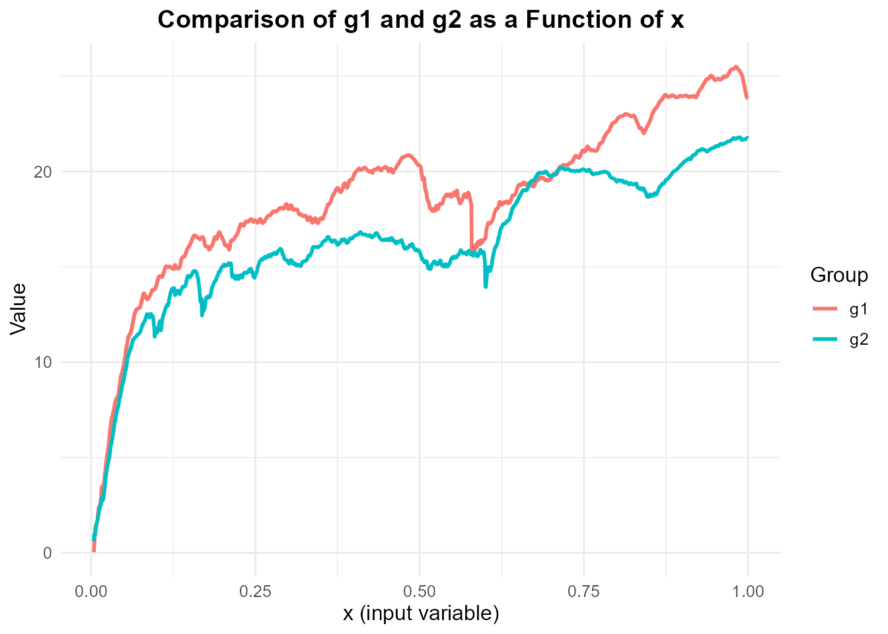

DSCUNIDataSets: A Comprehensive Collection of University and Engineering Datasets
Source:vignettes/DSCUNI_vignette.Rmd
DSCUNI_vignette.Rmd
library(DSCUNIDataSets)
library(ggplot2)
library(dplyr)
#>
#> Attaching package: 'dplyr'
#> The following objects are masked from 'package:stats':
#>
#> filter, lag
#> The following objects are masked from 'package:base':
#>
#> intersect, setdiff, setequal, unionIntroduction
The DSCUNIDataSets package provides a curated collection
of datasets designed to support research and analysis in various domains
of engineering, clustering, and ordered regression studies. The package
includes datasets such as mechIng_df, which contains mechanical
engineering data used to illustrate ordered isotonic regression, and
bolts_df, which contains data from experiments analyzing the effects of
machine adjustments on the time to count bolts.
This package is intended for researchers, analysts, and practitioners who require ready-to-use, high-quality datasets for methodological exploration, statistical modeling, and applied research. All datasets are maintained in their original form, ensuring data integrity, and are compatible with standard R workflows.
DSC UNI Plot
# Manually transform the data to long format using only dplyr
mechIng_long <- bind_rows(
mechIng_df %>% select(x, value = g1) %>% mutate(group = "g1"),
mechIng_df %>% select(x, value = g2) %>% mutate(group = "g2")
)
# Line plot comparing g1 and g2 as a function of x
ggplot(mechIng_long, aes(x = x, y = value, color = group)) +
geom_line(size = 1) +
labs(
title = "Comparison of g1 and g2 as a Function of x",
x = "x (input variable)",
y = "Value",
color = "Group"
) +
theme_minimal() +
theme(
text = element_text(size = 12),
plot.title = element_text(face = "bold", hjust = 0.5)
)
Conclusion
The DSCUNIDataSets package provides a unified interface
for accessing a wide range of curated datasets from diverse domains.
Covering various topics and formats, the package includes clean,
preloaded datasets that are ready for immediate use in R, enabling
researchers, analysts, and data enthusiasts to explore, analyze, and
visualize data efficiently.